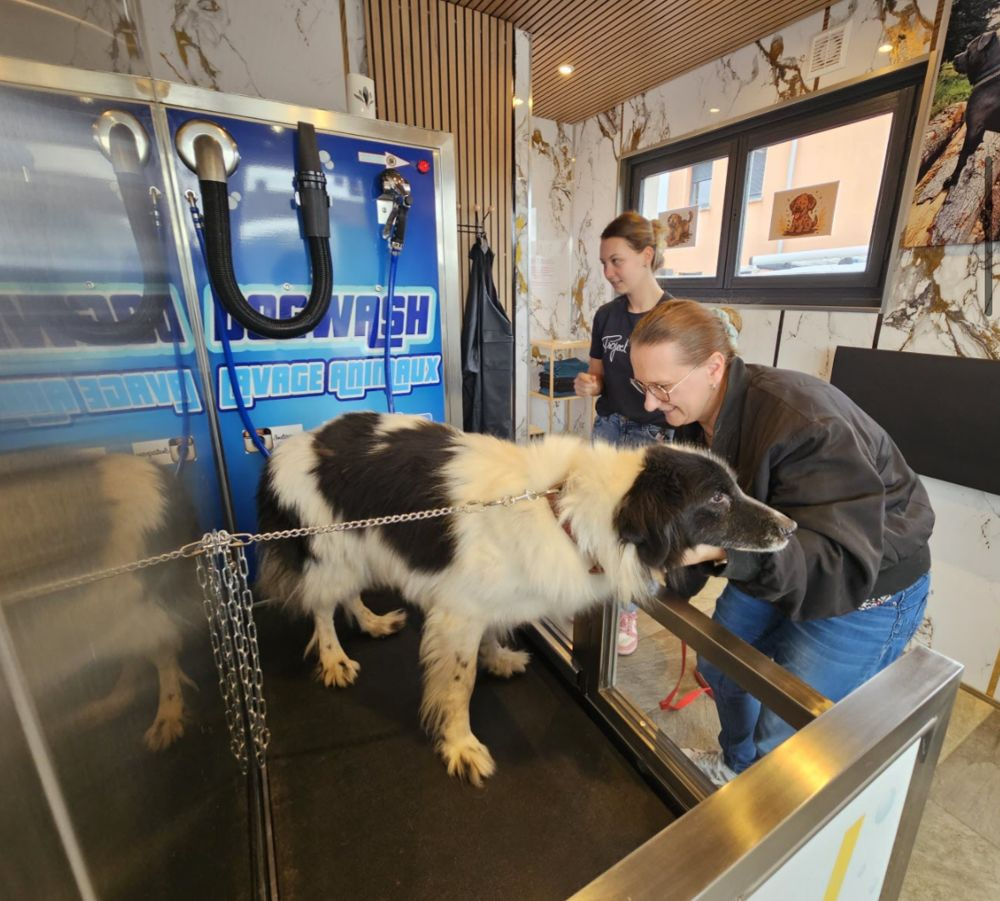

L'Est Républicain ·
Loki Wash, une laverie automatique pour chiens en libre-service, a ouvert rue Denis-Papin
Pas de toiletteur ici, mais une machine en libre-service : c'est vous qui vous occupez de votre chien, simplement, dans un local chauffé et équipé d'eau chaude.